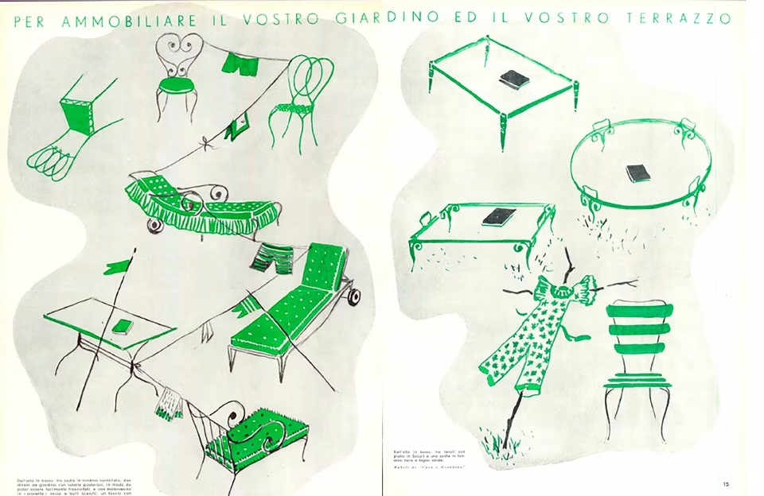

dagli anni '40
Oggi riassunto nel termine “arredo outdoor”, negli anni Trenta veniva più semplicemente chiamato “mobilio per il giardino e la terrazza”.
I nuovi arredi richiedono funzionalità e semplicità delle forme: “tutto deve diventare chiaro, limpidissimo, senza frastagli e appesantimenti”,
diventano “un grande giocattolo”.

dagli anni '50
Lo scettro dell'arredo per l'esterno, dagli anni Cinquanta, è nelle mani di Vittorio Bonacina che nel 1951 presenta la poltrona Margherita in vimini, disegnata da Franco Albini.
L'azienda americana Mc Guyre, lavora su poltroncine pieghevoli in legno di quercia e cuoio.
Dall'estero proposte dal pittore e designer giapponese Geniciro Inokuma, mentre dalla Danimarca spiccano le eleganti soluzioni proposte da Mary Bloch..
dagli anni '60
Nell'agosto del 1965, fanno la prima comparsa i mobili da giardino disegnati da Gae Aulenti.
Tubo di acciaio curvato e verniciati a fuoco, con imbottiti asportabili.
Diventeranno i pezzi della celebre collezione “Locus Solus” per Poltronova, arancioni e giallo limone: nel 1969, anche Alain Delon siede sulla seggiola della Gae, nel film La Piscine, di Jacques Deray.
Il tappeto volante di Pierre Pauilin, fatto da elementi imbottiti collegati da cerniere “quando non vola è un giaciglio, comodo anche per il riposo dopo i picnic”.